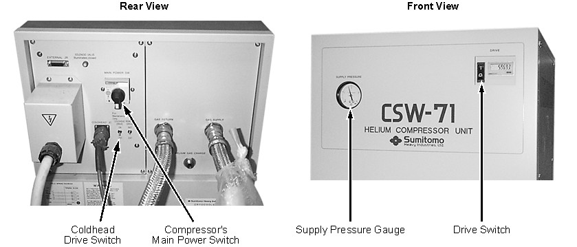
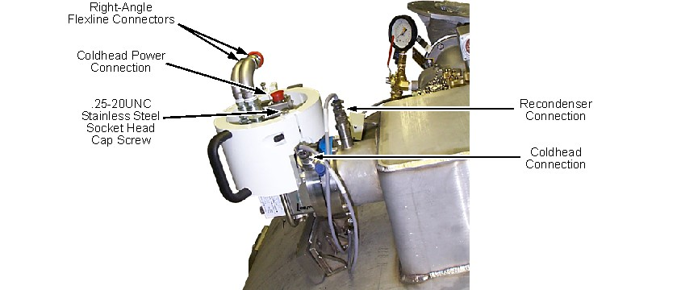
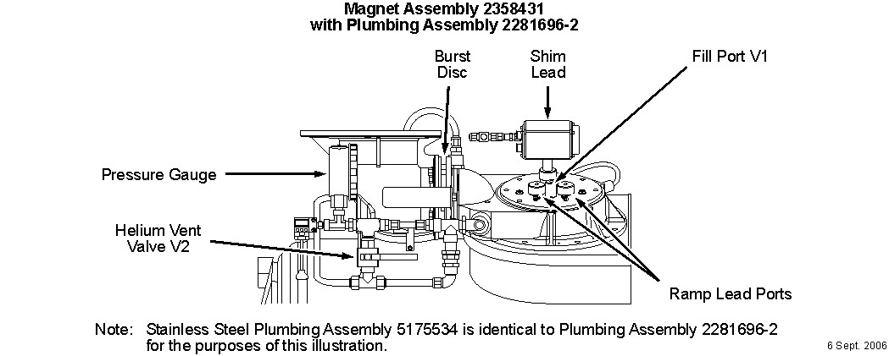
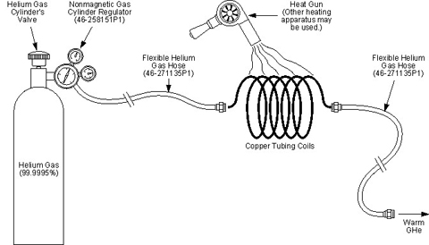
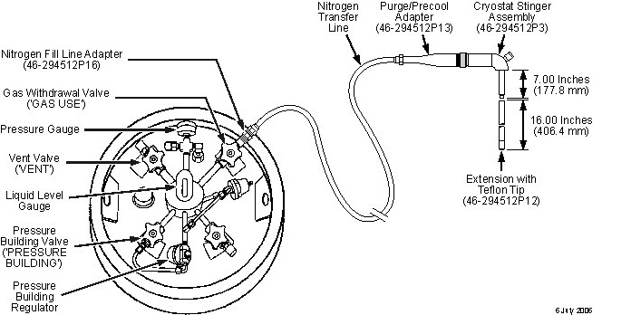
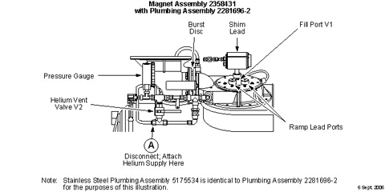
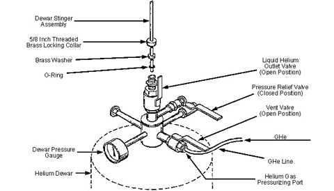

Operating Documentation
Direction 5500113, Rev# 3
Discovery MR750 3.0T Service Methods
Module Version 5.0, Version Date 2/9/10
Operating Documentation |
| Required Persons | Preliminary Reqs | Procedure | Finalization |
|---|---|---|---|
| 2 | Included in Procedure | 10 hours | Included in Procedure |
In a few situations, the magnet Cryostat may need to be warmed to room temperature by the removal of cryogens after the magnet is at zero magnetic field strength. Example situations are when removing an internal ice blockage or repairing a vacuum leak that requires re-evacuation. If a magnet warm-up is required, contact the Regional Field Service Engineer before proceeding with this Cryostat Warm-Up procedure.
The Cryostat is designed to allow for the recovery of liquid helium (LHe). However, because of the nature of the failure modes requiring warm-up, the liquid helium is most likely boiled off. If the unit is less than 50% full of liquid helium, warm up the magnet without liquid helium recovery. If recovery of liquid helium is to be done, a prepared Dewar (cold and containing helium gas) is recommended for liquid helium recovery. A warm Dewar evaporates a significant quantity of liquid helium in the cool down process.
| Item | Qty | Effectivity | Part# | Manufacturer | |
|---|---|---|---|---|---|
| 3.0T Warning Sign & Label Kit | 1 | - | 2379494 | - | |
| Portable Oxygen Monitor | 1 | - | 2287000 | - | |
| Cryogen Safety Wear Kit | 1 kit/person | - | 46-271137G1 | - | |
| Nonabsorbent Protective Clothing (long sleeve shirt and pants) | 1 set/person | - | - | - | |
| Nonferrous Safety Shoes | 1 pr./person | - | - | - | |
| Brass Master Padlock with Brass Shackle | 1 | - | 46-194427P320 | - | |
| Brass Master Transition Padlock | 1 | - | 2387081 | - | |
| Black & White on Red Lockout Tag | 1 pkg. of 25 | - | 46-194427P322 | - | |
| Transition LOTO Tag | 1 | - | 46-194427P313 | - | |
| Line Cord Plug Cover, Plugs ≤3 in. (76 mm) wide x ≤5.875 in. (149 mm) long, Cords ≤1.25 in. (31 mm) diameter | 1 | - | 46-194427P321 | - | |
| Universal Fill Line Kit | 1 | - | 46-294705G1 | - | |
| Liquid Helium Transfer Line Kit | 1 | - | 46-294513G1 | - | |
| Helium Regulator and Hose Kit | 1 | - | 46-306734G1 | - | |
| Nonmagnetic Helium Cylinder Cart | 1 | - | 46-258150P1 | - | |
| Flexible Helium Hose, 40 ft. (12.2 m) | 1 or 2 | - | 46-271135P1 | - | |
| Heat Gun | 1 | - | - | - | |
| Copper Tubing, approximately 6 ft. (2 m) long | 1 | - | - | - | |
| Lakeshore Cryotronics 208 Digital Thermometer (46-301477G2), Lakeshore Cryotronics DRC-80 (46-265269G1), Low-Cost Shield Temperature Diode Box (46-317543G1) or equivalent temperature sensing device | 1 | - | 46-301477G2, 46-265269G1 or 46-317543G1 | - | |
| Digital Voltmeter (DVM), Volt-Ohm Meter (VOM) or noncontact voltage tester | 1 | - | - | - | |
| Titanium Tool Kit: Basic Set 5113258, Installation Set 5112581 or other nonferromagnetic tools (magnets with magnetic fields >1.5T) | 1 kit | - | 5113258 or 5112581 | - | |
| HDv Service Platform | 1 | - | 5155291-2 | - | |
| Service Methods documentation for the magnet/enclosures (available through the Common Documentation Library at gehealthcare.com or your local GE Healthcare Service Representative) | 1 | - | - | - | |
| Item | Qty | Effectivity | Part# | Manufacturer |
|---|---|---|---|---|
| 99.995% Gaseous Helium, 235 SCF Nonferrous Cylinder | 12 | - | - | - |
| Liquid Nitrogen Dewars (pressure-building preferred) | 12 | - | - | - |
| 250 SCF or 500 SCF Helium Dewars (prepared: cold and containing helium gas): 4 @ 250 SCF or 2 @ 500 SCF | 4 or 2 | - | - | - |
| ||||
| Potential Fatal Injury! | ||||
| before and while warming up the Cryostat: | ||||
|
| ||||
| Potential Fatal Injury! | ||||
| before starting to warm-up the Cryostat: | ||||
| Have all Work Assistants or Observers comply with the Buddy System Requirements & Certification subsection of 2301164PRE MR Magnet Safety Requirements. |
| ||||
| Fatal Explosive Hazard! | ||||
| Gas cylinder rupture/damage or opening cylinder valve fast will release 2400 psi gas from cylinder. | ||||
| Make sure gas cylinders are secure from falls and away from moving objects before using. Always open cylinder valve slowly. |
| ||||
| Potential Magnet Quench! | ||||
| A magnet quench during procedure could result in rapid expulsion of liquid helium through the Vertical Penetration. | ||||
| Make sure magnet is ramped down to zero field before starting to warm-up the Cryostat. |
| ||||
| Asphyxiation Hazard! | ||||
| Procedure generates odorless, colorless helium gas that displaces oxygen in the air. | ||||
| Make sure magnet room vent exhaust fan is on and that the magnet room doors are secured in the open position before warming up the Cryostat. |
| ||||
| Potential Cold Burn or Asphyxiation Hazard | ||||
| Internal cryostat pressure build-up to >5.25 psig will open the 5.25 psig relief valve. | ||||
Before removing either Ramp or Fill Port Caps or loosening
any component resulting in the release of cryogen pressure:
|
| ||||
| Potential Cold Burn Hazard! | ||||
| Exposure to Cryogens and contact with cold objects is possible during Cryostat Warm-Up. | ||||
| Wear protective clothing, nonabsorbent gloves and goggles when warming up the Cryostat. |
| ||||
| Electrical Shock Hazard! | ||||
| Contact with connectors leading to an energized Compressor can cause electrical shock. | ||||
| Disconnect the power cable and follow OSHA Lockout/Tagout (LOTO) procedures to make sure power is not supplied to the Compressor while warming up the Cryostat. |
| ||||
Observe the following:
| ||||
| ||||
| Service Platform with side shield must be installed when working
on magnet to protect side mounted components from damage. Illustration 1: Service Platform with Side Shield Installed
| ||||
| NOTE: | If the site has Magnet Monitor proprietary software, connect to Magnet Monitor and turn off the alarm for vessel pressure. Turn the vessel pressure control to a high value of 0.5 psig and a low value of 0.4 psig. |
| Condition | Reference | Effectivity |
|---|---|---|
Make sure the area is secure and that ALL required Warning Signs are posted to meet the safety requirements stated in the following document before starting this Cryostat Warm-Up procedure. | - | |
Removal of some magnet enclosure components may be required to complete this Cryostat Warm-Up procedure. Refer to the following document and the appropriate Service Methods documentation (available through the Common Documentation Library at gehealthcare.com or your local GE Healthcare Service Representative) before continuing with this Cryostat Warm-Up procedure if cover removal is required. | - | |
The magnet must be at zero field before starting Cryostat Warm-Up. Refer to the following document. | - | |
Make sure the Magnet Room exhaust fan is on and operational, and the Magnet Room door is propped open, before starting Cryostat Warm-Up. | - | - |
The following procedure must be used when the magnet's liquid helium level is <50%.
Verify that the magnet is at zero magnetic field strength.
Check the magnet's liquid helium level. If the level is >50%, use the warm-up procedure in Cryostat Warm-Up with Liquid Helium Recovery, Cryostat Warm-Up with Liquid Helium Recovery.
| ||||
| Electrical Shock Hazard | ||||
| Contact with connectors leading to an energized Compressor can cause electrical shock. | ||||
| Disconnect the power cable and follow loto procedures to make sure power is not supplied to the Compressor. |
Turn the Cryocooler Compressor off (upward I position shown below). Disconnect and LOTO input power to the Cryocooler Compressor. Verify that no voltage is present by using a DVM or equivalent measuring device.
Illustration 2: Views of CSW-71D Compressor

Disconnect the supply and return gas lines at the Coldhead. (See the illustration below.)
Illustration 3: Coldhead Flexline and Power Connection Locations

Open the helium Vent Valve V2 shown below.
Illustration 4: Helium Vent Plumbing

Remove the Burst Disc in conformance with Burst Disc Replacement, then reconnect the Vent Adapter.
Connect either the Lakeshore Crytonics DRC-80 (46-265269G1), Lakeshore Model 208 Thermometer Kit (46-301477G1), MTM-101 Handheld Magnet Temperature Meter (5119507), or the Low-Cost Shield Temperature Diode Box (46-317543G1) to monitor the silicone diode temperature in conformance with Magnet Commissioning Checks.
Connect a helium gas (99.995%) and regulator set-up to the Helium Fill Port at Valve V1 shown in Illustration 4.
Insert a 7 in. (178 mm) Cryostat Stinger (46-294512P3) with a 16 in. (406 mm) Cryostat Stinger Extension (46-294512P12) into the Fill Port, and tighten the compression fitting. See the illustration below.
| NOTE: | For a low-ceiling option site, use two 8 in. (203 mm) stinger extensions instead of the 16 in. (406 mm) stinger extensions. Insert the 8 in. (203 mm) stinger extensions into the Magnet, and screw onto the 7 in. (178 mm) Cryostat Stinger Assembly as shown, one at a time. |
Illustration 5: Helium Bottom Fill Equipment

Blow warm helium gas regulated at 4 to 6 psig through the Cryostat until the silicon diode temperature readout exceeds 90K.
| NOTE: | The gas may be warmed through the heat exchange coil heated with a heat gun as shown below. |
Illustration 6: Helium Gas Warm-Up Set-Up (Optional)

Shut off the helium gas flow using the Positive On/Off Valve. (See Illustration 5.)
Remove the helium gas cylinder & regulator set-up, and connect the nitrogen gas set-up in its place. (See the illustration below.)
Illustration 7: Nitrogen Gas Set-Up

Open the Positive On/Off Valve.
Start a nitrogen gas flow regulated at 4 to 6 psig, and continue until the silicon diode temperature readout exceeds 290K.
Discontinue the nitrogen gas flow, remove the Stinger and cap Helium Fill Port V1. Close V2.
| ||||
| Do not use this Cryostat Warm-Up procedure if the magnet's liquid helium level is <50%. | ||||
Verify that the magnet is at zero magnetic field strength.
Check the magnet's liquid helium level. If the level is <50%, perform the warm-up procedure in Cryostat Warm-Up without Liquid Helium Recovery, Cryostat Warm-Up without Liquid Helium Recovery.
| ||||
| Electrical Shock Hazard! | ||||
| Contact with connectors leading to an energized Compressor can cause electrical shock. | ||||
| Disconnect the power cable and follow loto procedures to make sure power is not supplied to the Compressor. |
Turn the Cryocooler Compressor off (downward O position shown in Illustration 2). Disconnect and LOTO input power to the Cryocooler Compressor. Verify that no voltage is present by using a DVM or equivalent measuring device.
Disconnect the supply and return gas lines at the Coldhead (shown in Illustration 3).
Connect either a Lakeshore Cryotronics DRC-80 (46-265269G1), Lakeshore Cryotronics Model 208 Thermometer Kit (46-301477G1), or Low-Cost Shield Temperature Diode Box (46-317543G1) to monitor the silicon diode temperature in conformance with Magnet Commissioning Checks.
Open Vent Valve V2 momentarily to purge the vent plumbing and reduce internal pressure to <0.2 psig. Close V2. (See Illustration 4.)
Disconnect the helium vent plumbing at “A” in the illustration below, and connect the helium gas (99.995%) and regulator set-up at that point.
Illustration 8: Location for Helium Gas Connection

Loosen and remove the cap from Helium Fill Port V1 as shown above.
Insert a 7 in. (178 mm) Cryostat Stinger (46-294512P3) with a 16 in. (406 mm) Cryostat Stinger Extension (46-294512P12) into the Fill Port, then tighten the compression fitting. (See Illustration 5.)
Place the locking collar, washer and O-ring from a prepared helium Dewar onto the other end of the transfer line. (See the illustration below.)
Illustration 9: Helium Transfer Line Extension Connection

Open Valve V2.
Blow helium gas regulated at 4 to 6 psig through the setup and into the Cryostat.
Refer to the above illustration, and set the valves on the Dewar to:
Helium Outlet Valve - Closed
Pressure Relief Valve - Closed
Helium Vent Valve - Open
Wait for a bluish plume to start expelling from the transfer line, then:
Open the Helium Outlet Valve.
Fully insert the transfer line into the Dewar.
Back off the transfer line approximately 1 in. (25 mm) from the bottom of the Dewar.
Engage and lock the locking collar, washer and O-ring, securing the Transfer Line onto the Dewar.
| NOTE: | If a warm Dewar is used, insert and lock the transfer line onto the Dewar immediately for maximum cooling and flushing impact. |
Monitor the cryogen level, gas pressure, and Vent Valve to establish when the Dewar has filled and when the Cryostat is empty of liquid helium.
When the Dewar is full or the Cryostat is empty, turn off the gas flow to the Cryostat and close Valve V2.
Close the Positive On/Off Valve on the transfer tube.
Loosen the Dewar's compression fitting, and withdraw the transfer line from the Dewar.
Set and wire the valves on the Dewar in the following positions:
Helium Outlet Valve - Closed
Pressure Relief Valve - Open
Helium Vent Valve - Closed
No finalization steps.